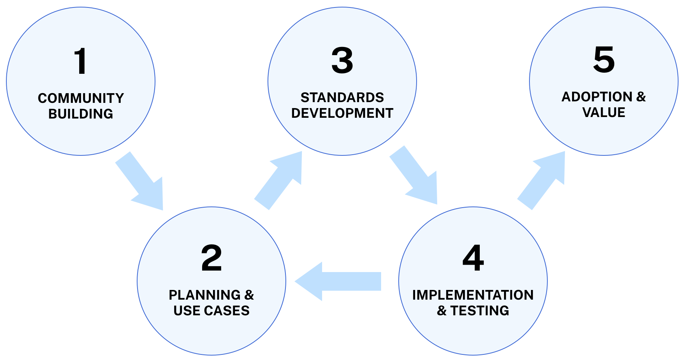

The MITRE Health Data Interoperability Playbook aims to help health specialty organizations create data standards that provide substantial improvements to patient care and research - within individual specialties and across all specialties.
Why is the Playbook being created and shared now? MITRE has had a primary role in creating and building a community within the CodeX HL7 FHIR Accelerator, building applications using the mCODE cancer data standard, and the accelerating adoption of CodeX's mCODE-based Use Cases to address challenges in the oncology space. This success has led leaders in the cardiovascular and genomics domains to start work in CodeX. It has also led many additional medical specialties to ask MITRE's experts questions such as:
These questions are just some of the motivations that led MITRE to share it's experience in CodeX, mCODE, and other FHIR-based standards initiatives in this Playbook.
In addition, formerly disparate elements are converging to make this a prime time for other specialties to create FHIR-based standards to address challenges. Patients, providers, payer, researchers and others are realizing the need for standards that provide semantic interoperability. Recent Government rules and regulations are driving a standards-based underpinning (see Standards Development) upon which future specialty and other application standards can build. Vendors are working to meet customer demands and Government direction, delivering products increasingly based on standards. CodeX and mCODE have leveraged these underpinnings from the start.
There are approaches in addition to MITRE's that may be useful to review. Whatever approach is followed, the outcome must be consistent with other specialties and in the best interest of all patients who typically need the services of multiple specialties during their lifetime. MITRE's Approach and Design Principles aim to ensure the necessary level of consistency and quality, and have a track record of success that can be reviewed here and elsewhere.
Who is the intended audience for the Playbook? The Playbook should be valuable to a range of organizations and people interested in creating and leveraging specialty health data standards to addres real-world challenges.
The site will help specialty leaders considering replicating the model pioneered for oncology in CodeX to apply in their own spcialty. This site may encourage specialty leaders to work more closely with CodeX and other specialties to speed work and increase coherency. Parts of the site will be useful to particular stakeholders (e.g., patient organizations, health systems, specialty societies, government agencies, payers, vendors, etc.) and particular roles (e.g., decision makers, funders, project managers, community organizers, clinical experts, informaticists, standards developers, system engineers, communications personnel, etc.) involved in just a subset of the spectrum of all future work.
"How" this Playbook is organized is directly related to "How" the CodeX Community approaches its work: This approach has five tracks that overlap in time, interact substantially, and have been improving with experience:

The five tracks are explored in greater depth by following the links in the above list, and via the Playbook Menu found on all pages.
Also provided in the Playbook are Case Studies that leverage the tracks, including the history of activities, outcomes, and lessons that may be useful for new specialties. Lower-level details and links related to the tracks and Case Studies can be found in the Resources section.